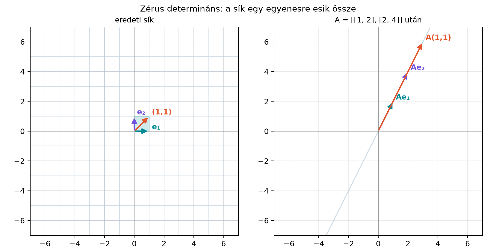

9.4.1 Miért érdemes egyetlen
pillantással dönteni?
Ha egy
egyenletrendszert szeretnénk megoldani, az „egyszerű” módszerrel csak
akkor írhatjuk fel az
alakot, ha az inverz mátrix egyáltalán létezik. A gyakorlatban azonban
ritkán szeretnénk ténylegesen kiszámolni az inverzet: egy jól
megválasztott ellenőrzés olcsóbban is megmondhatja, hogy a rendszer
biztonságosan megoldható-e. A determináns, a rang, a lineáris
függetlenség és a nulltér mind ugyanazt a tényt írják le, csak más-más
nézőpontból.
9.4.2 Szemléletes kép: amikor a
transzformáció „összenyomja” a teret
Tekintsük az
mátrixot. Ha
-t
úgy képzeljük el, mint egy leképezést, amely a sík minden pontját
elmozgatja, akkor ez a leképezés minden pontot az
egyenesre küld. A tér elveszít egy dimenziót.

Zérus determináns: a sík egy egyenesre
esik össze - Szemléltető ábra; az A = ((1,2),(2,4)) mátrix a sík minden
pontját az y=2x egyenesre képezi le, ezért nem
invertálható.
A szemléletes képen az egységnégyzet képe egy szakasszá zsugorodik. A
mátrix determinánsa
,
tehát az előző alfejezetek tanulsága szerint
így az inverz mátrix nem létezik. Az alábbi tétel éppen ezt az
összefüggést általánosítja: a zérus determináns nem csupán egy számolási
eredmény, hanem ugyanannak a jelenségnek az algebrai tükre, amelyet
geometriailag dimenzióvesztésként látunk.
9.4.3 Definíció és egyenértékű
feltételek
Először egy hasznos elnevezést rögzítünk.
Emlékeztetőül: Az inverz mátrix: visszafordítható
transzformációk alfejezet szerint egy négyzetes mátrix
reguláris (invertálható), ha van inverze, és
szinguláris, ha nincs. Az alábbi tétel többek között
azt mondja ki, hogy ez pontosan akkor teljesül, amikor
.
Definíció. Egy
-es
mátrix teljes rangú, ha
,
vagyis a lépcsős alakjában mind az
oszlopban van főelem.
Tétel. Legyen
négyzetes mátrix. Ekkor a következő állítások egyszerre igazak vagy
egyszerre hamisak:
invertálható, azaz létezik
;
;
teljes rangú, azaz
;
oszlopai lineárisan függetlenek;
sorai lineárisan függetlenek;
az
homogén rendszernek csak a triviális
megoldása van;
minden
esetén az
rendszernek pontosan egy megoldása van;
oszlopai bázist alkotnak
-ben;
az
leképezés kölcsönösen egyértelmű (bijektív).
9.4.4 Kidolgozott példa: a
feltételek ellenőrzése
Vegyük újra az
mátrixot, és nézzük végig a tétel állításait.
1. Invertálhatóság: Az előző alfejezetek szerint
nem létezik, mert a determináns
.
2. Determináns:
.
3. Rang: Az oszlopvektorok
lineárisan összefüggők, mert a második
éppen az első kétszerese. Az oszloptér egydimenziós, tehát
.
4. Oszlopfüggetlenség: A fentiek miatt hamis.
5. Sorfüggetlenség: Az első sor
,
a második
;
a második sor az első kétszerese, tehát hamis.
6. Nulltér: Az
rendszer
A második egyenlet az első kétszerese,
ezért elég az
egyenletet megoldani. Innen
,
tehát például
nemtriviális megoldás. Az állítás
hamis.
7. Egyértelmű megoldás minden jobb oldalra:
Válasszuk a
jobb oldalt. Ekkor
A bal oldalak egymás kétszeresei, a
jobb oldalak nem, tehát nincs megoldás. Az állítás hamis.
8. Bázis: Két lineárisan összefüggő vektor nem
alkothat bázist
-ben,
tehát hamis.
9. Bijektivitás: A leképezés képe csak az
egyenes, tehát nem minden pontra érkezik, így nem kölcsönösen
egyértelmű.
Most tekintsük a
mátrixot. Itt
A tétel szerint ebből az egyetlen számból már tudjuk, hogy a többi
állítás is igaz. Ellenőrizzük gyorsan:
Az oszlopvektorok
és
nem skalárszorosai egymásnak;
;
az
rendszerből
adódik. Az elsőből
,
ezt a másodikba helyettesítve
tehát
és
,
így csak a triviális megoldás létezik;
az inverz
Tehát mind a kilenc állítás egyszerre teljesül.
9.4.5 Miért egyenértékűek?
A kilenc állítás közötti kapcsolatot egy láncolattal lehet
követni.
1. lépés: inverz és determináns. Ha
invertálható, akkor
ezért
.
Megfordítva, ha
,
akkor a következő lépés szerint a rang
,
így a Gauss–Jordan-módszer elakadás nélkül végigfut, és az
átalakítás megadja az inverzet. Ezért (1) és (2) ekvivalens.
2. lépés: determináns és rang.A
determináns kiszámítása és tulajdonságai alfejezet szerint a
sorcserék és a sorhozzáadások a determinánst legfeljebb előjelben
változtatják meg, ezért az elimináció után
,
ahol
a kapott felső háromszög alak. Ez a szorzat pontosan akkor nem nulla, ha
a főátló minden eleme nemnulla, vagyis ha mind az
oszlopban van főelem, azaz
.
Így (2) és (3) ekvivalens. Geometriailag ez természetes: ha az oszlopok
összefüggők, az általuk kifeszített test „lapos”, térfogata nulla.
3. lépés: függetlenség és rang. A rang a lineárisan
független oszlopok maximális száma. Egy
-es
mátrixnak pontosan akkor van
független oszlopa, ha rangja
.
Ezért (3) és (4) ekvivalens. Mivel
,
ugyanez az érvelés
-ra
azt adja, hogy (2) a sorok függetlenségével, azaz (5)-tel is
ekvivalens.
4. lépés: rang és nulltér. A Lépcsős alak, rang és a megoldások száma
alfejezetben láttuk, hogy a szabad változók száma
.
Ha a rang
,
akkor nincs szabad változó, tehát az
rendszernek csak a triviális megoldása van. Ha a rang kisebb, mint
,
akkor van szabad változó, ezért nemtriviális megoldás is létezik. Így
(3) és (6) ekvivalens.
5. lépés: nulltér és egyértelmű megoldás. Tegyük
fel, hogy
és
is megoldása az
rendszernek. Ekkor
Ha a nulltér csak a nullvektort tartalmazza, akkor
,
tehát
.
Ezért a triviális nulltér biztosítja az egyértelműséget. Ha ráadásul a
rang teljes, akkor az oszlopok kifeszítik
-t,
tehát minden
előáll lineáris kombinációként, vagyis megoldás is létezik. Így (3) és
(6) együtt ekvivalens (7)-tel.
6. lépés: egyértelmű megoldás és inverz. Ha minden
esetén pontosan egy megoldás van, válasszuk sorban az
egységvektorokat. Legyen
az
megoldása. Ekkor a
mátrix, amelynek oszlopai a
vektorok, kielégíti az
egyenletet. Négyzetes mátrixoknál az
egyenlőségből a
is következik (ezt itt nem bizonyítjuk), tehát
,
és
invertálható.
7. lépés: bázis és bijektivitás. Ha az oszlopok
függetlenek és darabszámuk
,
akkor a Bázis és koordináták alfejezet szerint
bázist alkotnak
-ben.
A bázis tulajdonság éppen azt mondja ki, hogy minden vektor egyértelműen
áll elő lineáris kombinációként, ami a leképezés kölcsönös
egyértelműségét adja.
Összefoglaló táblázat. A gyakorlatban az a kérdés,
melyik feltételt a legolcsóbb ellenőrizni:
Feltétel
Mit jelent
Hogyan ellenőrizzük
a térfogat nem lapul össze
-nél
;
nagyobbnál eliminációval
minden oszlopban van főelem
Gauss-elimináció, np.linalg.matrix_rank
oszlopok (sorok) függetlenek
egyik sem fejezhető ki a többiből
-nél:
nem skalárszorosai egymásnak
csak triviális
a nulltér csak
homogén rendszer eliminációja
egyértelmű
minden
-re
egy megoldás
elimináció / np.linalg.solve
létezik
a transzformáció visszacsinálható
Gauss–Jordan; a legdrágább, ritkán kell
Kis
(,
)
mátrixnál a determináns képlete a leggyorsabb; nagyobb mátrixnál
mindegyik feltétel ugyanarra a Gauss-eliminációra vezet, amely egyszerre
adja a főelemeket, a rangot és a determinánst. Kézzel szerkezeti ránézés
is segít: két egyenlő vagy arányos sor/oszlop, illetve csupa nulla sor
azonnal szingularitást jelez.
9.4.6 Majdnem szinguláris mátrixok
és a numerikus stabilitás
Gyakori félreértés, hogy „kis determináns = rosszul invertálható”. Ez
nem ilyen egyszerű. A determináns skálázásra érzékeny: a
mátrix determinánsa
,
a
mátrixé pedig
,
pedig mindkettő tökéletesen invertálható.
Ugyanakkor létezik egy fontos jelenség, amelyet majdnem
szinguláris mátrixnak szoktak nevezni. Tekintsük például a
mátrixot, ahol
nagyon kicsi pozitív szám. Ekkor
,
tehát a mátrix elméletben invertálható. Az inverze azonban
Ha
,
akkor az inverz elemei nagyjából
nagyságrendűvé válnak. Ez azt jelenti, hogy egy egészen kicsi mérési
hiba a jobb oldalon hatalmas hibává erősödhet fel a megoldásban. Az
elméleti invertálhatóság tehát megvan, de a numerikus megoldás instabil
lehet.
A gyakorlati stabilitás mérésére nem a determináns nagysága, hanem a
kondíciószám való, amelyet a Mátrixnormák, spektrálnorma és kondíciószám
alfejezetben fogunk tárgyalni. Itt elég annyit megjegyezni: a
determináns nulla volta éles határvonal, a nulla közeli értéke viszont
nem feltétlenül jelent numerikus katasztrófát.
A det = 0.0 rank = 1
B det = 1.0 rank = 2
B inverze:
[[ 5. -2.]
[-2. 1.]]
B megoldása b=(1,1)-re: [ 3. -1.]
A det és a matrix_rank eredménye pontosan
illeszkedik a kézi számoláshoz. A B mátrixra kapott
megoldás ellenőrzése:
9.4.8 Tipikus hibák és
félreértések
A determináns nagyságából stabilitásra
következtetni. A
az invertálhatóság pontos feltétele, de a determináns skálázásfüggő. A
mátrixnak kicsi a determinánsa, mégis kiválóan invertálható.
A triviális nulltérből téglalapmátrixnál szürjektivitásra
következtetni. A fenti tétel csak négyzetes
mátrixra érvényes. Egy
-es,
független oszlopú mátrix nulltere triviális, a leképezés
()
mégsem szürjektív: a képe legfeljebb egy sík
-ban,
ezért az
rendszer nem minden
-re
oldható meg. (Egy
-as
mátrix nulltere viszont sosem triviális, mert három ismeretlenre csak
két egyenlet jut, így mindig van szabad változó.)
Az
triviális voltát a sorokkal összekeverni. A nulltér az oszlopok
lineáris kombinációjának nullává válásáról szól, nem arról, hogy a sorok
ne lennének összefüggők. Négyzetes esetben persze mindkettő ekvivalens,
de a téglalap esetben óvatosnak kell lenni.
Inverz kiszámítása megoldás helyett. Ha a tétel
szerint
invertálható, akkor is igaz, hogy a gyakorlatban
megoldására a Gauss-elimináció vagy az LU-felbontás gyakran gyorsabb és
stabilabb, mint az inverz előállítása.
9.4.9 Feladatok
9.4.9.1 (a) Fogalmi/ellenőrző
kérdés
Egy
-as
mátrixról tudjuk, hogy az
rendszernek van nemtriviális megoldása. Melyik állítás következik
biztosan?
invertálható.
oszlopai lineárisan függetlenek.
.
.
9.4.9.2 (b) Kézi számolás
Adott az
mátrix. Döntsd el az invertálhatóságot a tétel legalább három
különböző feltételével.
9.4.9.3 (c) NumPy-feladat
Generálj egy
-es
véletlen mátrixot rögzített véletlenmaggal, majd ellenőrizd a
determinánsát és a rangját.
Magyarázd meg, miért várható, hogy a mátrix szinte mindig
invertálható lesz.
9.4.9.4 (d)
Gondolkodtató/alkalmazási feladat
Tegyük fel, hogy az
mátrixra
.
Miért biztos, hogy
nem invertálható? Válaszolj determinánsos, valamint nulltér-alapú
gondolatmenettel is.
9.4.9.5 (e) Ellenőrző kérdéssor az
eddigi részhez
Döntsd el a következő állításokról, hogy igazak-e.
Ha
,
akkor
invertálható.
Ha
és
invertálhatók, akkor
is invertálható.
Ha
-nak
csak a triviális megoldása van, akkor
oszlopai lineárisan függetlenek.
Ha a determináns nagyon kicsi, akkor a mátrix biztosan numerikusan
instabil.
9.4.10 Megoldások
9.4.10.1 (a)
Ha
-nak
van nemtriviális megoldása, akkor a nulltér nem triviális, tehát az
oszlopok nem lineárisan függetlenek, a rang kisebb
-nál,
a mátrix szinguláris. Ezért a helyes válasz a 4.
állítás:
.
9.4.10.2 (b)
Kiszámítjuk a determinánst:
Tehát
nem invertálható. Ellenőrzés a második feltétellel:
tehát az oszlopok összefüggők. A nullteret vizsgálva:
Az első egyenletből
.
Például az
vektor megoldása a homogén rendszernek, tehát van nemtriviális megoldás.
Mindhárom feltétel a szingularitást mutatja.
9.4.10.3 (c)
A véletlen mátrix szinte biztosan invertálható, mert az
oszlopvektorai véletlen választás mellett nem esnek egy alacsonyabb
dimenziós altérbe. A determináns így szinte biztosan nem nulla. A kód
kimenete függ a véletlenmagtól, de várhatóan rank = 4.
9.4.10.4 (d)
Ha
,
akkor a szorzásdetermináns-tétel szerint
tehát
.
Így
nem invertálható.
Nulltér-alapú indoklás: ha
invertálható lenne, akkor létezne
.
Ekkor
de a bal oldal
,
tehát
lenne. Ez ellentmondás, ha
nem nulla. Ha
maga a nullmátrix, akkor sem invertálható, hiszen
minden
-re.
9.4.10.5 (e)
Igaz. Ha
,
akkor a tétel szerint
invertálható.
Igaz. Ha
és
invertálhatók, akkor
is invertálható, és inverze
.
Igaz. Ha a homogén rendszernek csak a triviális
megoldása van, akkor a nulltér nulla dimenziós, ami pontosan akkor
következik be, ha az oszlopok lineárisan függetlenek.
Hamis. A kis determináns önmagában nem jelent
instabilitást; a kondíciószám a megfelelő mérce, amelyről később lesz
szó.
9.4.11 Rövid összefoglaló
Egy négyzetes
mátrix invertálhatósága több, egymással egyenértékű módon
megfogalmazható. A legfontosabb feltételek:
,
az oszlopok lineárisan függetlenek, a rang
,
az
nulltér triviális, valamint az
rendszer minden
-re
egyértelműen megoldható. A determináns nulla volta éles határ, de a kis
determináns nem önmagában jelenti a numerikus instabilitást; erre a
kondíciószám lesz a megfelelő eszköz. A feltételeket egybefogó
összefüggések: